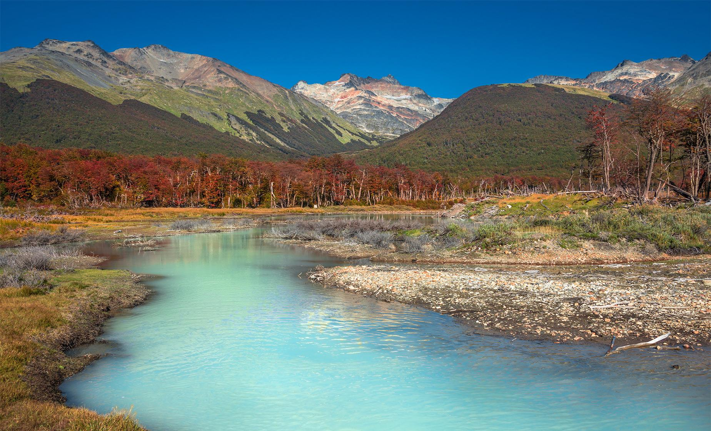

Tierra del fuego
En el primer punto de interés tenemos a Tierra del Fuego. Un lugar que brilla por sus vibrantes colores y sus hermosos paisajes, ideal para quienes buscan una opcion relajada y tranquila lejos del bullicio constante de la civilización.

Bariloche
En esta segunda opción tenemos una alternativa similar a la primera, enfocada a clientes con mas gusto por la vida nocturna y el ruido envolvente de la ciudad, aunque con cierto toque de misticismo y aventura.